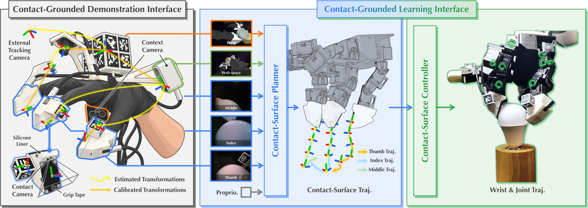
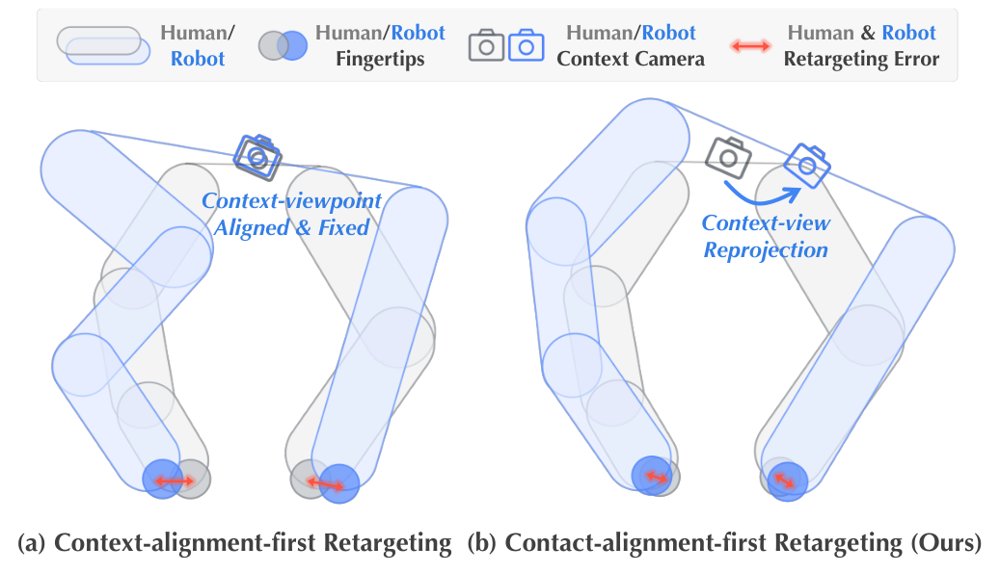

目录 · 7 节
1它到底在解决什么问题？2整体流程：围绕接触面串起示范和学习3为什么要先对齐接触面？4为什么策略要预测接触面而不是关节？5这套方案真的更好吗？6我认为它的局限7一个机器人或灵巧手团队可以怎么试这篇论文提出 CIMI（Contact Imitation Interface，作者做的示范采集加策略学习框架），让人手示范能真正教会形状不同的机器手。办法不是让机器手模仿人手的姿势，而是让两只手在同一块接触面上做同样的动作。CIMI 给人手和机器手的手指装上形状一样、带小摄像头的指尖模块，示范时追踪这些接触面怎么移动；转成机器手动作时先保证接触面对齐；学到的策略也直接预测接触面接下来怎么走。在 LEAP（一款常见的开源四指机器手）和 Wuji 两款多指机器手的六组手与任务组合上，任务完整做完的平均成功率从 30.8% 提到 80.8%。这里的 30.8% 来自同样用接触摄像头、但直接预测手腕和关节动作的基线。只换一种转换方式、改成先对齐接触，捏硬币时接触误差就从 14.67 毫米降到 0.51 毫米。做机器人灵巧手数据的团队值得读，因为这几处改动都能单独搬到现有采集流程里。
它到底在解决什么问题？
先看一个示意场景：桌上平放一枚硬币，人戴着指尖模块，用拇指和食指指尖模块的边缘插到硬币下面，再把它捏起来。人手做得很轻松，但把这段示范交给一只四指机器手时，麻烦来了。机器手的手指更粗、关节位置不同，如果转换时先摆好机器手腕，让场景摄像头看它的角度和看人手时一样，然后手腕不动、只调手指去凑，指尖接触位置会偏开一截（论文实测捏硬币时平均偏约 15 毫米）。对插硬币这种动作，偏这么多就等于插不进去。
| 转换时优先对齐什么（示意） | 机器手看起来 | 指尖接触位置 | 插硬币的结果 |
|---|---|---|---|
| 手腕和摄像头位置 | 和人手姿势很像 | 偏一厘米以上 | 指尖顶在硬币边上，插不进 |
| 指尖接触面 | 手腕略有偏移 | 基本重合 | 能插到硬币下方 |
论文表 III 的真实数据和这个示意一致：先固定手腕位置再调手指，捏硬币任务里插入和捏起两步的成功率都是 0%。
拍人手视频、戴手套能让人自然操作，但接触过程转不到机器手上；遥操作和外骨骼录下的动作机器手能直接用，却要专用硬件、动作也受机器手关节限制。CIMI 的做法是让人基本自由地操作，同时录下能直接对上机器手的接触数据。
整体流程：围绕接触面串起示范和学习

先说清这篇论文的核心概念。接触面指每个指尖模块上用来碰物体的那块平面，人手戴的模块和机器手装的模块，这块平面的形状、大小完全一样。每个模块根部还有一个小彩色摄像头，贴着接触面往前看，专门拍指尖和物体接触的局部，论文叫它接触摄像头；手腕和虎口处另有两个双目摄像头拍更大的场景，论文叫场景摄像头。有了这块共享的接触面，人手和机器手之间就有了一个可以逐毫米对齐的共同参照物。
整条流程分两半：
| 阶段 | 输入 | 做什么 | 产出 |
|---|---|---|---|
| 示范：追踪 | 人手示范视频和指尖上的标记 | 用视觉标记估计位姿，再叠加标定好的变换，算出每块接触面每一帧的位置和朝向，统一放在外部追踪摄像头的坐标系里，机器手轨迹也在这个坐标系里优化 | 人手接触面轨迹 |
| 示范：转换 | 人手接触面轨迹 | 同时优化机器手腕和手指，让机器手接触面贴合人手的 | 机器手的手腕和关节轨迹 |
| 示范：画面转换 | 场景摄像头录像 | 把画面换到机器手视角，并画上机器手 | 机器人视角的训练画面 |
| 学习：规划器 | 接触摄像头和场景画面、各手指接触面相对拇指的位姿 | 预测每块接触面接下来 16 步怎么动 | 接触面轨迹 |
| 学习：控制器 | 当前关节角和预测的接触面轨迹 | 一次前向计算换成手腕和手指指令 | 可执行的电机目标 |
关键分工是：规划器只管接触面该怎么走，控制器只管怎样用这只手的关节把接触面送到那里。下面拆开讲。
为什么要先对齐接触面？
转换这一步要回答：机器手的手腕和手指怎么摆，才能复现人手的动作。常见做法是先按人手侧和机器手侧场景摄像头的位姿确定并固定机器手腕轨迹，让两边场景摄像头拍到的画面角度一致，剩下只调手指关节去凑接触。问题是手腕一旦固定，手指能调的范围很有限，机器手指尖往往够不到人手指尖当时的位置。

CIMI 把手腕也放开，和手指关节一起优化。目标是让机器手每块接触面的四个角，和追踪到的人手接触面四个角尽量重合，同时惩罚相邻帧之间手腕和关节的突变，避免动作抖动：
这里 是第 帧的手腕位姿， 是手指关节角， 根据手腕位姿和关节角算出第 根手指接触面第 个角在空间里的位置， 是人手对应角的位置， 是平滑项。直觉很简单：四个角都重合，接触面的位置和朝向就都对上了。
为什么是四个角而不是一个中心点？只对齐中心点，接触面可以绕着中心转，朝向不受约束。表 III 正好分开测了这两个选择。在灯泡任务上，同样先对齐接触，只对齐中心时接触误差 4.36 毫米、最后点亮的成功率 20%；改成对齐四个角，误差降到 1.09 毫米，成功率升到 90%。同时约束接触面的位置和朝向，对装灯泡这类要反复抓握的动作帮助很大。
手腕挪了位置，场景摄像头的视角也跟着变，和人录下的画面对不上。CIMI 的补救是离线做画面转换：先用双目图像估计深度，把画面还原成带颜色的点云，再按机器手腕的新位置重新投影成图像，最后把渲染出的机器手叠上去。接触摄像头的画面则原样保留，因为两边的接触面和摄像头装法相同，相对接触面的视角本来就一样。
为什么策略要预测接触面而不是关节？
常见的策略直接输出手腕的相对移动和各关节的变化量。论文观察到，在自由度很高的灵巧手上，这样学出来的动作手腕和手指配合差，接触容易对不准，因为一个视觉模型既要学接触该怎么动，又要学这只手的运动学怎么实现它。
CIMI 把这件事拆成规划和控制两层来学。规划器是一个流匹配模型，论文正文没说明它推理时从什么初始量出发、要做几次模型计算才生成出轨迹，训练细节放在补充材料里。它的输入有两类：一类是冻结的视觉主干从每个摄像头画面提取的特征，另一类是各手指接触面相对拇指的位姿。这个位姿训练时由转换后的机器手轨迹按正运动学算出，执行时由机器手当前的关节角算出。规划器输出每块接触面未来 16 步的相对运动。这 16 步全部以预测起点那一刻接触面自己的坐标系为参照，平移和旋转都相对于这一刻的接触面来表示，而不是每一步相对前一步。训练用的标签来自转换后的机器手轨迹：按正运动学算出机器手接触面的轨迹，再换成这种相对表示，而不是直接用追踪到的人手轨迹。 Hoot 说

- 新起点：以这一刻的接触面为参照
- 实际执行的步
- 规划了但没执行
- 不在这次规划里
- 每一格都相对起点（示意：食指接触面每步匀速前推 1 毫米）：第 k 格存的就是“离起点 k 毫米”，第 8 格是 8 毫米，第 16 格是 16 毫米，读任一步都不用把前面加起来，某一步猜偏也不会传给后面。
- 走完 8 步就换参照：重新规划时，起点换成此刻接触面自己的坐标系，后面 16 步又都相对这个新起点。
CIMI 的贡献是让规划器预测接触面的运动，再由控制器换成关节指令。每次规划给出未来 16 步，全部以起点那一刻的接触面为参照；控制器只执行前 8 步，就用最新画面从新的位置重新规划。 出处: 示意例子，对应论文 §III 规划器输出和执行方式
拿捏硬币举例（示意）：规划器输出的是“食指接触面往前贴着桌面推 3 毫米、再向上翻 10 度”，至于这需要手腕下压多少、哪个关节转多少，交给控制器。
控制器是一个小 MLP，输入当前关节角和这 16 步接触面轨迹，一次前向计算就输出未来 16 步的手腕位姿和手指关节目标。其中手腕给的是相对当前手腕的移动量，手指给的是关节角的绝对目标值。执行时只走前 8 步，再根据最新画面重新规划。
规划器训练时还对输入画面做视觉增强，目的是让它对三种差异不敏感：画面转换留下的瑕疵、渲染出的机器手和真机外观的差别、人手和机器手两套摄像头的色彩亮度差异。训练细节见论文补充材料 II-A。
控制器的训练数据不只来自任务示范。作者在转换好的轨迹上加平滑的手腕和关节扰动，再用正运动学算出对应的接触面轨迹，这样就得到大量成对的“接触面轨迹—关节指令”样本，同一只手的控制器可以跨任务复用。
这套方案真的更好吗？
主实验在 LEAP 上做了四个任务（捏 1 厘米小方块、插捏硬币、从信封里取信、装灯泡），在 Wuji 上做了方块和硬币，两款手用的是同一批人手录像转换出来的数据，每组测 20 次。
| 策略 | 输入画面 | 平均最终成功率 |
|---|---|---|
| 直接预测手腕和关节 | 只有场景摄像头 | 0.8% |
| 预测接触面 | 只有场景摄像头 | 1.7% |
| 直接预测手腕和关节 | 场景 + 接触摄像头 | 30.8% |
| 预测接触面（CIMI） | 场景 + 接触摄像头 | 80.8% |
第一，接触摄像头几乎是必需的。只有场景画面时，方块、硬币、信封三个任务连第一步都是 0%，失败录像里是撞到桌面、把硬币推走、没对准信封口。这说明对准、接触这一步需要的局部信息，场景摄像头提供得远远不够，接触摄像头补上了这一块。
第二，在有接触摄像头的前提下，预测接触面比直接预测关节高 50 个百分点，而且六组都有提升，最少的灯泡任务高 20 个点，信封任务高 65 个点。两款手上的方块和硬币都有效，说明同一批人手示范确实能转给不同的机器手。
消融实验（表 IV，取 LEAP 上硬币和灯泡两项的平均）说明画面转换有明显贡献：去掉画面上叠的机器手，平均成功率从 87.5% 降到 62.5%，画面转换整个去掉则只剩 30.0%。论文观察到这时整体动作还算合理，但接触控制变得不够精确，说明缩小场景视角和机器手外观的差异有助于把接触做准。规划器的手指位姿输入换成关节角、或者控制器只用本任务数据训练，都会降到 52.5%，说明这两个设计也各有贡献。
采集效率上，同一个人 15 分钟内用 CIMI 采到的成功示范，相当于徒手的 70%（硬币）和 71%（灯泡），装灯泡时是遥操作的 2.3 倍，遥操作在硬币任务上一条成功示范都没采到。
我认为它的局限
第一，任务规模小。六组手与任务组合、每组 20 次测试，示范数在 103 到 187 条之间，每个任务单独训练策略，还看不出这套接触面表示在大规模多任务数据上是否同样有效。
第二，画面增强是隐藏的关键。去掉上面说的规划器画面增强，两个任务最终成功率都变成 0%，这说明人手示范转换出来的画面和真机画面之间的差距，很大程度上靠增强兜住，换一套场景或光照可能要重新调。
第三，硬件绑定较深。人手和机器手要装同款指尖模块和摄像头，接触面形状还得一致，换一款机器手就要重新做模块、标定摄像头装法，这和直接拍人手视频相比，扩展成本高不少。
一个机器人或灵巧手团队可以怎么试
- 先在现有采集流程里只改转换目标：从固定手腕、对齐场景摄像头，改成手腕放开、对齐指尖接触面的四个角，测转换后的接触误差。如果误差能降到毫米级，再往下走；要训练策略时，记得同时把场景画面按新手腕位置重投影，否则视角对不上（论文里把重投影和叠加机器手两步一起去掉，平均成功率从 87.5% 掉到 30.0%；没有单独去掉重投影的对照）。
- 给机器手加一个贴着指尖的小摄像头，先用现有策略结构对比加和不加的成功率，判断这类局部画面对自己的任务有多大帮助。
- 再把策略输出从关节变化量换成接触面轨迹，配一个用扰动数据训练的小控制器，看高自由度手上配合问题是否改善。
| 维度 | 评价 |
|---|---|
| 问题重要性 | 高。人手示范是扩大灵巧操作数据很有希望的路线，接触对不上是它的核心瓶颈 |
| 方法创新性 | 中高。共享接触面同时用于数据转换、观测和动作表示，思路统一 |
| 实验证据 | 中。两款手、六组任务提升一致且有细致消融，但规模小 |
| 工程成本 | 中高。需要定制指尖模块、多路摄像头和标定 |
| 是否值得尝试 | 值得，尤其是做毫米级接触任务的团队，可以先从改转换目标开始 |
最关键的启发是：跨形态迁移技能时，要对齐的是手和物体接触的那一小块，而不是整只手的姿势。
读完这篇，你觉得
夜读鸮记下了，谢谢你的反馈。
点一下即可，无需登录；再点一次撤回。只统计匿名次数，不记录你是谁。
讨论
欢迎补充实验细节、复现经验或不同看法。需 GitHub 登录。
正在加载讨论…